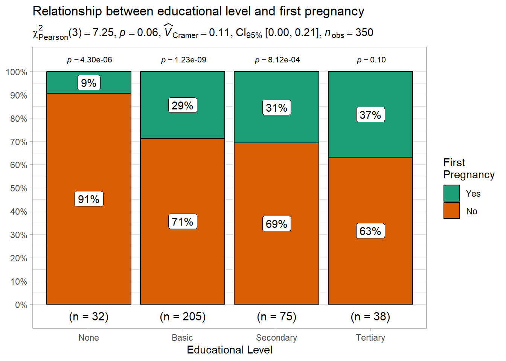
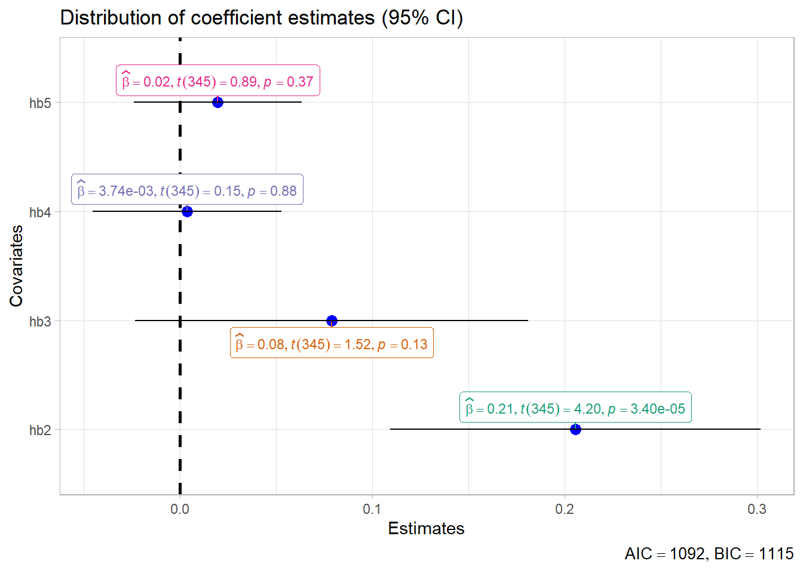

Code
dataF %>%
ggplot(aes(x = hb1, y = hb2, color = educ, shape = educ)) +
geom_point() +
geom_smooth(formula = y ~ x, method = "lm") +
theme_light()dataF %>%
ggplot(aes(x = hb1, y = hb2, color = educ, shape = educ)) +
geom_point() +
geom_smooth(formula = y ~ x, method = "lm") +
theme_light()dataF %>%
select(starts_with("hb"), fpreg) %>%
GGally::ggpairs(columns = 1:5, aes(colour = fpreg)) +
scale_fill_brewer(palette = "Set1") +
scale_colour_brewer(palette = "Set1")Registered S3 method overwritten by 'GGally':
method from
+.gg ggplot2
dataF %>%
mutate(mcv_cat_1 = case_when(mcv1 < 80 ~ "Microcyte",
mcv1 >= 80 & mcv1 <= 90 ~ "Normal",
mcv1 > 90 ~ "Macrocyte") %>%
factor(levels = c("Microcyte", "Normal", "Macrocyte"))) %>%
ggplot(aes(x = hb1, y = hb2)) +
geom_point(aes(size = mcv_cat_1, col = mcv_cat_1), alpha = .5) +
geom_smooth(formula = y ~ x, method = "lm", color = "black") +
geom_vline(xintercept = 10, color = "red", size = 0.5, linetype = "dashed") +
geom_hline(yintercept = 10, color = "red", size = 0.5, linetype = "dashed") +
geom_abline(intercept = 0, slope = 1, color = "brown", size = 0.5,
linetype = "dashed") +
labs(x = "First Hemoglobin",
y = "Second Hemoglobin",
title = "Hemoglobin on Hemoglobin Distribution") +
theme_light()Warning: Using `size` aesthetic for lines was deprecated in ggplot2 3.4.0.
ℹ Please use `linewidth` instead.Warning: Using size for a discrete variable is not advised.dataF %>%
select(mcv1, mcv2, mcv3, mcv4, mcv5, agecat, id) %>%
pivot_longer(cols = mcv1:mcv5, names_to = "Time", values_to = "MCV") %>%
ggplot(aes(x = Time, y = MCV, col = Time), fill = "snow1") +
geom_boxplot(outlier.color = "white", outlier.alpha = 0) +
geom_jitter(width =.2, alpha = .2, col=1) +
labs(x = "Time of Sample taking",
y = "Mean Corpuscular Volume",
title = "Sequential changes in MCV over the study duration") +
theme_bw() +
scale_x_discrete(labels =c("mcv1" = "First MCV",
"mcv2" = "Second MCV",
"mcv3" = "Third MCV",
"mcv4" = "Fourth MCV",
"mcv5" = "Fifth MCV"))
dataF %>%
ggplot(aes(x = mcv1, y = mch1, size = mcv1)) +
geom_point(shape = 23, aes(fill = agecat), alpha =.2) +
scale_x_continuous(name = "Initial Mean Corpuscular Volume",
breaks = seq(50, 130, 10),
labels = c("50.0","60.0","70.0", "80.0", "90.0", "100.0",
"110.0","120.0", "130.0"),
position = "top") +
scale_y_continuous(name = "Mean Corpuscular Hemoglobin",
limits = c(15,45),
breaks = c(15, 30, 45),
labels = c("15.00","30.00","45.00"),
position = "right") +
scale_fill_manual(name = "Age Category",
values = c("blue", "red", "green", "brown")) +
scale_size_continuous(name = "MCV",
range = c(1,4),
limits = c(50, 140),
breaks = c(80, 120, 140),
labels = c("Microcyte", "Normocyte", "Macrocyte"))dataF %>%
ggplot(size = 0.5) +
geom_point(aes(hb3, mcv3, color = mcv1, size = occup, shape = educ)) +
guides(color = guide_colorbar(title = "First MCV"),
shape = guide_legend(title = "Educational level"),
size = guide_legend(title = "Occupation"))Warning: Using size for a discrete variable is not advised.
dataF %>%
ggplot(aes(x = hb1, y = ..density..)) +
geom_histogram(fill = "skyblue", col = "black", bins = 15)+
geom_density(aes(y = ..density..), col = "red", size= 1) +
labs(x = "First HB", y = "Density", title = "Distribution of HgB")+
theme_classic()
dataF %>%
ggplot(aes(x = hb2))+
geom_histogram(aes(y = ..density..), bins=10, fill = "snow", col = "red") +
stat_function(fun = dnorm,
args = list(mean = mean(dataF$hb2, na.rm=T),
sd = sd(dataF$hb2)), col = "blue",
size = 1.5)
agecat_label <-
c("Age: 10-19 years", "Age: 20-29 years",
"Age: 30-39 years","Age: 40-49 years")
names(agecat_label) <- c("10-19", "20-29", "30-39", "50-59")
dataF %>%
ggplot(aes(hb3, mcv3), size = 0.5) +
geom_point() +
geom_smooth(method = "lm", formula = y~x) +
labs(
title = "Relationship between hemoglobin and mean corpuscular volume",
x = "Hemoglobin (mg/dl)",
y = "Mean Corpuscular Volume (fl)")+
theme_bw()+
facet_wrap(facets = .~agecat, labeller = labeller(agecat = agecat_label))+
theme(
text = element_text(family = "serif"),
strip.text = element_text(face = "bold"),
strip.background = element_rect(fill = "white"),
plot.title = element_text(face = 'bold'))
dataF %>%
ggplot(aes(hb3, mcv3), size = 0.5) +
geom_point() +
geom_smooth(method = "lm", formula = y~x) +
labs(
title = "Relationship between hemoglobin and mean corpuscular volume",
x = "Hemoglobin (mg/dl)",
y = "Mean Corpuscular Volume (fl)")+
theme_bw() +
facet_grid(occup ~ agecat, labeller = labeller(agecat = agecat_label))
dataF %>%
ggplot(aes(hb3, mcv3), size = 0.5) +
geom_point() +
geom_smooth(method = "lm", formula = y~x) +
labs(
title = "Relationship between hemoglobin and mean corpuscular volume",
x = "Hemoglobin (mg/dl)",
y = "Mean Corpuscular Volume (fl)")+
theme_bw() +
facet_wrap(c("occup", "agecat"), nrow = 3, labeller = labeller(agecat = agecat_label))
df <-
tibble(x=c(1,2,3), y=c(2,3.5,2), lab1 = c("A","B","C"), counts = 1:3)
df %>%
ggplot() +
ggforce::geom_circle(
aes(x0 = x, y0 = y, r = 1.4, fill = lab1),
alpha = .3,
size = 1,
colour = 'grey') +
coord_fixed() +
theme_void() +
scale_fill_manual(values = c('cornflowerblue', 'firebrick', 'gold')) +
scale_colour_manual(values = c('cornflowerblue', 'firebrick', 'gold'),
guide = "none") +
labs(fill = NULL, title = "My Venn Diagram I") +
annotate("text",
x = c(2, 3.5, 2.7, 1.2, 2, 2, 0.3),
y = c(4, 2, 2.7, 2.8, 2.5, 1.5, 1.8),
label = 1:7, size = 5, fontface = "bold") +
theme(
plot.title = element_text(
hjust = 0.5,
family = "serif",
face = "bold",
size = 16,
colour = "red"),
legend.position = 'bottom')
dataF %>%
select(hb1:hb3, hb4, hb5, hct1:hct3, hct4, hct5) %>%
cor() %>%
ggcorrplot::ggcorrplot(hc.order = FALSE,
type = "lower",
lab = TRUE,
lab_size = 3,
method="square",
colors = c("tomato2", "white", "springgreen3"),
title="Correlogram of blood indices",
ggtheme=theme_bw)
dataLM <- dataF %>% select(hct4, hb4)
lm(hb4 ~ hct4, data = dataLM) %>%
predict(interval = "predict") %>%
as_tibble() %>%
bind_cols(dataLM) %>%
ggplot(aes(x = hct4, y = hb4)) +
geom_point() +
geom_smooth(method = "lm", formula = y~x, se=T)+
geom_line(aes(y = lwr), col = "coral2", linetype = "dashed") +
geom_line(aes(y = upr), col = "coral2", linetype = "dashed") +
labs(title = "Relationship between HB4 and HCT4 with fillted line, prediction and se intervals",
x = "HCT 4 (%)", y = "HB 4 (mg/dl)", caption = "Nurse Data 2015")+
theme_bw()Warning in predict.lm(., interval = "predict"): predictions on current data refer to _future_ responses
RColorBrewer::display.brewer.all()
dataF %>%
group_by(anemia1, agecat) %>%
summarise_each(funs(Mean = mean, SD = sd, se=sd(.)/sqrt(n())), hb1:hb2) %>%
mutate(Anemia.1 = case_when(anemia1 == 0 ~ "No",
anemia1 == 1 ~ "Yes") %>% as_factor()) %>%
ggplot(aes(x=Anemia.1, y=hb1_Mean, fill = agecat)) +
geom_errorbar(aes(ymin = hb1_Mean - 1.96*hb1_SD, ymax = hb1_Mean + 1.96*hb1_SD),
position = position_dodge(0.9), width = 0.2, size = 0.8) +
geom_bar(stat = "identity", position = position_dodge(0.9), col = "black") +
labs(x = "First Anemia Present", y = "Mean of First HgB (mg/dL)",
title = "Average initial HgB for first anemia and Age Categories") +
theme_bw()+
scale_fill_brewer(name = "Age Group", palette = "Dark2",
labels= c("10-19 yrs", "20-29 yrs", "30-39 yrs", "40-49 yrs"))Warning: `summarise_each()` was deprecated in dplyr 0.7.0.
ℹ Please use `across()` instead.Warning: `funs()` was deprecated in dplyr 0.8.0.
ℹ Please use a list of either functions or lambdas:
# Simple named list: list(mean = mean, median = median)
# Auto named with `tibble::lst()`: tibble::lst(mean, median)
# Using lambdas list(~ mean(., trim = .2), ~ median(., na.rm = TRUE))
temp <-
dataF %>%
group_by(educ) %>%
summarize(across(c(hb1, hb2, hb3, hb4, hb5), mean))
temp.2 <- tibble(x = rep(5,4), y = temp$hb5, z = temp$educ)
temp %>%
pivot_longer(col = hb1:hb5, names_to = "Period", values_to = "hgb") %>%
ggplot(aes(x = Period, y = hgb)) +
geom_line(aes(color = educ, group = educ), size = 1)+
geom_point(aes(color = educ, group = educ, shape = educ), size =2)+
labs(title = "Average Hemoglobin for each educational level", x=NULL)+
scale_y_continuous(name = "Hemoglobin (mg/dL)", limits = c(10,16)) +
scale_x_discrete(labels = c("hb1" = "First \nMeasure",
"hb2" = "Second \nMeasure",
"hb3" = "Third \nMeasure",
"hb4" = "Fourth \nMeasure",
"hb5" = "Fifth \nMeasure"))+
ggrepel::geom_label_repel(data = temp.2, aes(x = x, y = y, label = z))+
theme_bw()+
theme(legend.position = "none",
plot.title = element_text(family="serif",colour = "red",
hjust =0.5, face = "bold", size=16))
dataG <-
dataF %>%
mutate(is_outlier = (plt1<50 | plt2<100 | plt2>400 | plt1>400))
dataG %>%
ggplot(aes(x = plt1, y = plt2, col = is_outlier)) +
geom_point() +
labs(x = "First Platelet Count",
y = "Second Platelet Count",
title = "Relationship between first and second platelet counts showing possible outliers")+
theme_bw()+
ggrepel::geom_label_repel(data = filter(dataG, is_outlier == TRUE),
aes(label=id)) +
theme(legend.position="none")
dataH <-
readxl::read_xlsx(
"C:/Dataset/Red cell indices against ferritin.xlsx"
) %>%
mutate(
lg.fer = log(Ferritin),
MCH = ifelse(is.na(MCH), median(MCH, na.rm=T), MCH)
)
preds <-
rbind(
predict(lm(lg.fer ~ RBC, data = dataH), interval = "prediction"),
predict(lm(lg.fer ~ HGB, data = dataH), interval = "prediction"),
predict(lm(lg.fer ~ HCT, data = dataH), interval = "prediction"),
predict(lm(lg.fer ~ MCV, data = dataH), interval = "prediction"),
predict(lm(lg.fer ~ MCH, data = dataH), interval = "prediction")
) %>%
as_tibble()
dataH %>%
pivot_longer(cols=RBC:MCH, names_to = "bld.ind") %>%
mutate(
bld.ind = factor(bld.ind, levels = c("RBC", "HGB", "HCT", "MCV", "MCH"))
) %>%
arrange(bld.ind) %>%
bind_cols(preds) %>%
ggplot(aes(x = value)) +
geom_point(aes(y = lg.fer)) +
geom_smooth(aes(y = lg.fer), se=T, method = "lm", formula = y~x) +
geom_line(aes(y = upr), col = "red", linetype = "dashed") +
geom_line(aes(y = lwr), col = "red", linetype = "dashed") +
facet_wrap(vars(bld.ind), nrow = 2, scales = "free") +
labs(
title = "Blood indices with prediction lines (red), regression line (blue) and regression error",
y = "Log of serum ferritin concentration",
x = NULL)
dataF %>%
select(id, contains("mcv")) %>%
arrange() %>%
pivot_longer(cols = c(mcv1:mcv5)) %>%
mutate(tms = unclass(factor(name))) %>%
ggplot(aes(x = tms, y = value, group = id, color = avemcv)) +
geom_line() +
labs(x = NULL,
title = "Variations Of MCV Over The Five Review Periods") +
scale_x_continuous(breaks = c(1:5),
limits = c(1,5),
labels = c("First","Second", "Third", "Fourth", "Fifth"))+
scale_y_continuous(name= "Mean Corposcular Hemoglobin (fl) Measurement",
breaks = seq(50, 140, 10)) +
scale_color_viridis_c(breaks = seq(50, 140, 10)) +
theme(
plot.background = element_rect(fill = "black", colour = "black"),
panel.background = element_rect(fill = "black", color = "grey"),
panel.grid = element_blank(),
axis.text = element_text(colour = "grey", face = "bold", family = "serif"),
axis.ticks = element_line(colour = "grey"),
axis.title = element_text(colour = "grey", face = "bold", family = "serif"),
plot.title = element_text(colour = "grey",hjust = 0.5, face = "bold", family = "serif"),
legend.background = element_rect(fill = "black", colour = "grey"),
legend.title = element_blank(),
legend.text = element_text(colour = "grey", face = "bold", family = "serif"),
legend.key.height = unit(0.64, "in")
)
dataF %>%
mutate(avehb_cat = case_when(avehb < median(avehb) ~ "Low HB",
avehb >= median(avehb) ~ "High HB") %>%
factor(levels = c("Low HB", "High HB"))) %>%
select(starts_with("mcv"), avehb_cat) %>%
pivot_longer(cols = c(mcv1:mcv5), values_to = "mcv", names_to = "measure") %>%
group_by(avehb_cat, measure) %>%
mutate(mean_mcv = mean(mcv),
low_mcv = mean_mcv - 1.96*sd(mcv)/sqrt(n()),
high_mcv = mean_mcv + 1.96*sd(mcv)/sqrt(n())) %>%
ggplot(aes(y = mean_mcv, x = measure, fill = avehb_cat)) +
geom_bar(stat = "identity", position = position_dodge(0.9)) +
geom_errorbar(aes(ymin = low_mcv, ymax = high_mcv), size = 0.8,
width = 0.3,
position = position_dodge(0.9)) +
labs(y = "Mean Corpuscular Volume",
x = NULL,
title = "Variation in MCV per review period (95%CI)",
caption = "Source: Data One")+
scale_fill_manual(name = "HGB Status", values = c("grey", "grey45"))+
scale_x_discrete(labels = toupper(c("First", "Second", "Third", "Fourth", "Fifth")))+
scale_y_continuous(limits = c(0,130), breaks = seq(0, 130, 10))+
theme(
panel.background = element_rect(colour = "black", fill = "white"),
plot.background = element_rect(fill = "grey"),
plot.title = element_text(face = "bold", hjust = 0.5, family = "serif"),
axis.text = element_text(face = "bold", family = "serif"),
axis.title = element_text(family = "serif", face = "bold"),
plot.caption = element_text(family = "serif", face = "bold"),
legend.text = element_text(family = "serif", face = "bold"),
legend.title = element_text(family = "serif", face = "bold")
)
dataF %>%
summarize(across(contains(c("mcv","hb", "wbc", "mch")),mean)) %>%
pivot_longer(cols = mcv1:avemchc) %>%
filter(!(name %in% c("avemcv","avehb", "avewbc", "avemch", "avemchc"))) %>%
mutate(name2 = str_extract(name, "^\\D*"),
name = toupper(name)) %>%
ggplot(aes(x = name, y = value, color = name2))+
geom_segment(aes(xend = name, yend = 0), show.legend = F) +
geom_point(size = 6, show.legend = F) +
geom_text(aes(label = round(value, 1)), col = "black", size =2)+
labs(title = "Blood indices variability for each review period",
y = "Value",
x = NULL)+
theme_light() +
theme(
axis.text.x = element_text(angle = 90),
plot.title = element_text(hjust = 0.5, face = "bold")
)
ggstatsplot packagedataF %>%
select(hb1, fpreg) %>%
mutate(hb1 = round(hb1, 1)) %>%
na.omit() %>%
ggbetweenstats(
y=hb1, x=fpreg,
ggtheme = theme_light(),
bf.prior = F,
xlab = "First Pregnancy",
ylab = "Hemoglobin",
title = "Relationship between first pregnancy and hemoglobin",
outlier.tagging = T,
outlier.color = "red",
outlier.shape = 18)Error in integrate(meta.t.like, lower = (lower - mean.delta)/scale.delta, :
non-finite function value
dataF %>%
ggscatterstats(x = mcv1, y = mcv2, ggtheme = theme_light())Registered S3 method overwritten by 'ggside':
method from
+.gg GGally`stat_xsidebin()` using `bins = 30`. Pick better value with `binwidth`.
`stat_ysidebin()` using `bins = 30`. Pick better value with `binwidth`.
dataF %>%
ggbarstats(y = educ, x = fpreg,
ggtheme = theme_light(),
legend.title = "First \nPregnancy",
xlab = "Educational Level",
bf.message = F,
title = "Relationship between educational level and first pregnancy")
dataF %>%
gghistostats(
x = hb1,
ggtheme = theme_classic(),
normal.curve = T,
binwidth = 1,
normal.curve.args = list(size = 1, col = "red"),
bin.args = list(color = "black", fill = "blue", alpha = 0.1),
xlab = "Hemoglobin",
title = "Distribution of First Hemoglobins")
lm(hb1 ~ hb2 + hb3 + hb4 + hb5, data=dataF) %>%
ggcoefstats(output = "plot",
exclude.intercept = T,
ggtheme = theme_light(),
color = "red") +
labs(y = "Covariates",
x = "Estimates",
title = "Distribution of coefficient estimates (95% CI)")
dataF %>%
select(hb1, hb1, hb3, hb4, hb5, mcv1, mcv2, mcv3, mcv4, mcv5) %>%
ggcorrmat(colors = c("red","white","blue"),
ggtheme = theme_bw(),
matrix.type = "lower")
dataF %>%
mutate(mari = fct_collapse(mari,
"Married" = c("Married","Cohabiting"),
"Single" = c("Widowed", "Divorced"))) %>%
ggplot()+
geom_point(aes(x = avehb, y = avehct, color = mari), show.legend = F) +
geom_smooth(aes(x = avehb, y = avehct), se=F, formula = y~x,
method = "lm", size = 1, alpha = .5, col = "grey")+
facet_wrap(~mari, nrow = 2, strip.position = "left") +
labs(y = "Hematocrit (%)", x = "Hemoglobin (g/dl)",
title = str_glue("Relationship between Blood hemoglobin and ",
"Hematocrit stratified by marital status"))+
theme(panel.background = element_blank(),
panel.grid = element_blank(),
axis.line = element_line(),
strip.placement = "outside",
strip.background = element_rect(fill = "#c1d3fe", color = "black"),
strip.text = element_text(size = 10, face = "bold"),
text = element_text(family = "serif"),
axis.text = element_text(size = 10, face = "bold"),
axis.title = element_text(size = 10, face = "bold.italic"),
plot.title = element_text(face = "bold"))
dataF %>%
mutate(hct3 = ifelse(hct3 < 20, hct3 +40, hct3),
hct3 = ifelse(hct3 > 60, hct3 - 20, hct3)) %>%
ggplot(aes(x = hct3, y = hb3)) +
geom_point(color = "grey45") +
geom_smooth(aes(x = hct3, y = hb3, col = "Observed"),
formula = y~x, method = "lm", se = F) +
geom_segment(aes(x = min(hct3), y = min(hct3/3),
xend = max(hct3), yend = max(hct3/3),
col = "Expected"))+
labs(title = "Relationship between the third HB and HCT measurements",
subtitle = "Comparison of observed and expected regression line if HCT = 3*HB",
x = "Hematocrit (%)", y = "Hemoglobin (mg/dl)",
color = "Regression Line") +
theme_classic()+
theme(plot.title = element_text(face = "bold"),
plot.subtitle = element_text(face = "italic"))Warning in geom_segment(aes(x = min(hct3), y = min(hct3/3), xend = max(hct3), : All aesthetics have length 1, but the data has 350 rows.
ℹ Please consider using `annotate()` or provide this layer with data containing
a single row.